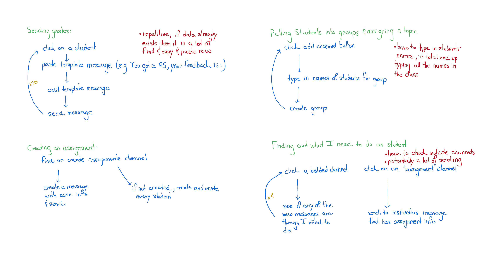
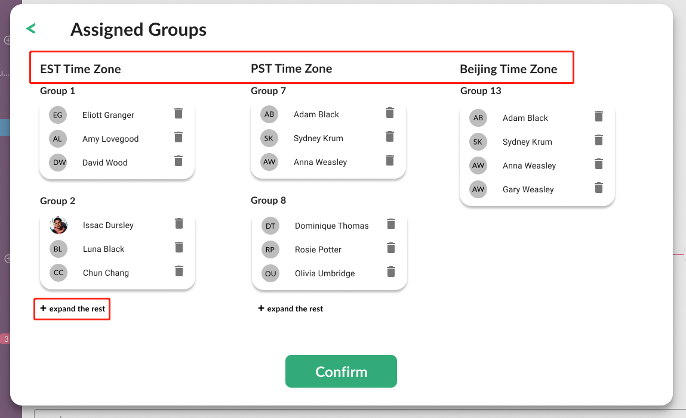
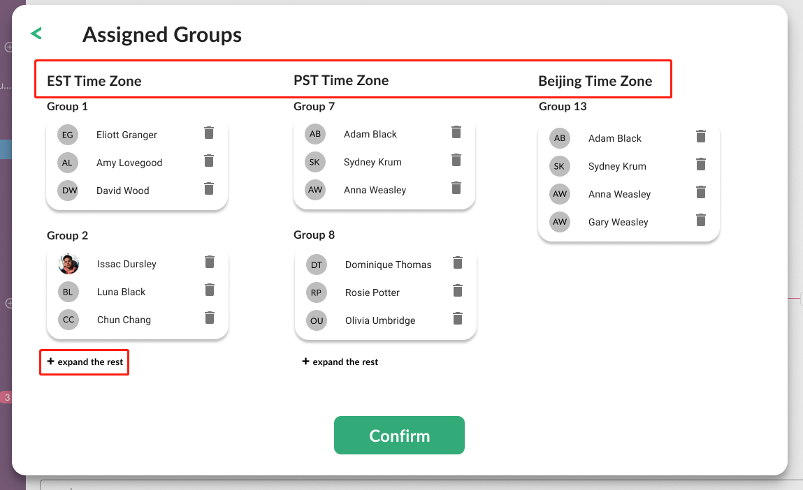
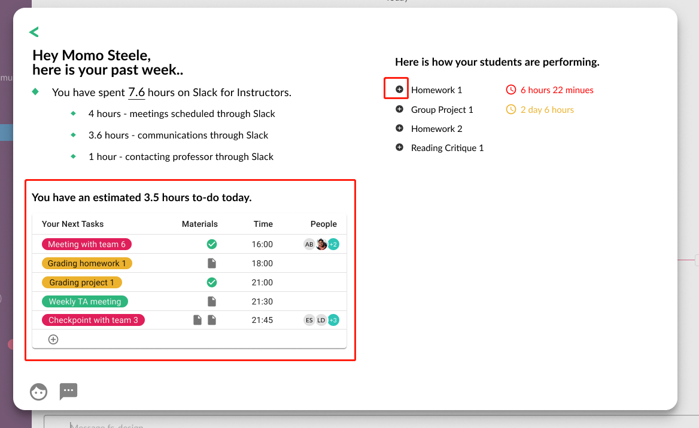
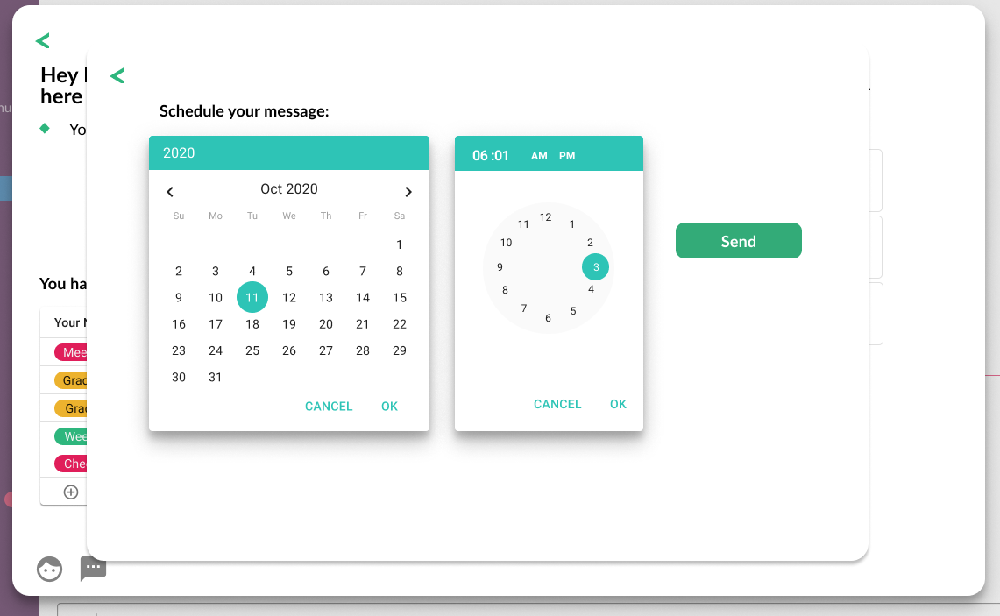
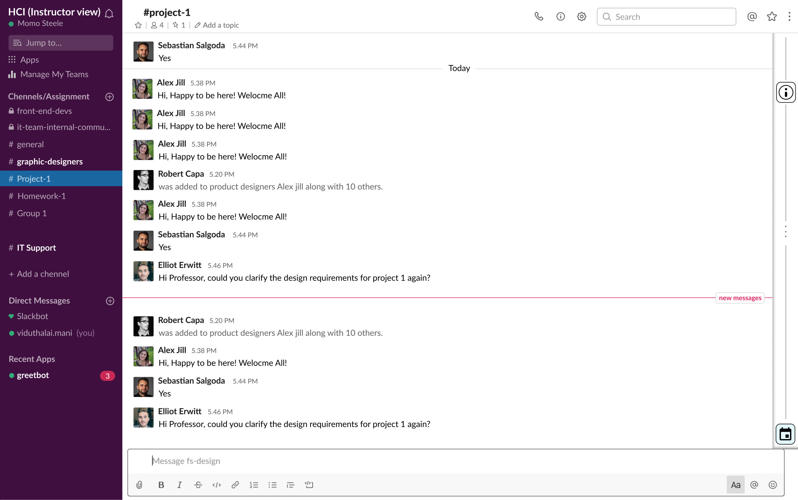

Slack For Instructors
Ariel Bao, Cameron Franz, Elias Stengel-Eskin
Background
Due to the COVID-19 pandemic, many aspects of life including education have moved to a largely online setting. This has created new challenges but also new opportunities for streamlining and improving educational experiences. The Slack platform is incredibly popular in modern office spaces and offers rapid and efficient communication, we believe that with some minor changes, it could provide and integrated educational environment that enriches student-instructor interactions. In particular, the rapid feedback available through Slack might provide a suitable proxy for face-to-face communication while accommodating individuals facing the myriad additional challenges of teaching and studying from home (e.g. different timezones, unreliable internet, personal responsiblities, etc.).
In this project, we focus on the perspective of the instructor, as in a course the instructor typically plays a more active role with the students largely acting as consumers. Our product is designed for a modified course structure, which has been adjusted for remote learning. Students are expected to watch pre-recorded lectures on their own time, and there are mandatory 1-hour office-hour-style discussion periods once a week. Each week has two lectures. The course has 3 assignments and 2 group projects.
Contextual inquiry
Subject
The contextual inquiry was conducted with a student with TA-ing experience who has used Slack in the past, but not extensively. We opted to use a contextual inquiry for our user research, as this best puts us in the shoes of someone using Slack for teaching while concomitantly allowing us to build a better persona of the instructor.
Intents
Create an assignment and share it with all students
Send each student their graded assignment with feedback
Assign students to groups for the group project
Assign each group a topic
Create a discussion thread for the weekly office hour and send students a required reading for that week’s office hour
Persona 1: Instructor
Based on our CI and background knowledge, we propose the following persona for an instructor: The instructor has multiple responsibilities, of which teaching is only one. Despite the changes associated with remote learning, the instructor endeavours to provide the best possible experience for their students. Thus, efficiency is of paramount importance to the instructor; they are ready to devote time to their course, but want to minimize the amount of time spent on tedious non-teaching activities. Furthermore, the instructor is cognizant of the different cirumstances under which students are learning this semester. The instructor is familiar with Slack's interfaces and is computer-literate.
Ideation and Analysis
Channels were used for Groups and Assignments
 A classroom slack environment with relevant areas circled
A classroom slack environment with relevant areas circled
We found that channels (circled in blue) were used for making groups and creating discussion around assignments. To create a channel, the instructor clicks the Add Channel button (green circle). A channel dedicated to sending assignments to students was relatively fast: the instructor simply creates a channel and has it automatically add everyone. Using channels for groups was more tedious. For each group, the instructor needed to click “Add Channel” and type the name of everyone in the group. This means that the instructor would need to create their groups somewhere else (like Excel) and then do a bunch of copy and pasting or typing, even though all of the names are already in Slack.
We believe that it should be easier to automatically populate channels with randomly assigned groups in a way that minimizes instructor effort while maximizing flexibility. Furthermore, given the increased number of students who are learning remotely from all over the world, we believe that any changes should natively support grouping students by timezone.
Direct messages were used to give feedback to students
Direct messages were used for giving grades and feedback. For each student the instructor would: click on that student, paste a message like “You got a 95%, my feedback is X”, edit that message, and then send the DM. Doing this for each student is obviously tedious, and it does beg a further question: does the instructor have their grades and feedback in some other document (like Excel) and is pasting them over? Or are they going to each student, grading their assignment, and sending messages as they go? In the Excel case it is a lot of copying and pasting to send a DM to every student, and being able to automatically send templated messages from a spreadsheet would be useful. In the grading-as-they-go case, keeping track of who has been graded would be tedious. In our first CI we did not get far enough into the details of how an instructor grades work to answer this question. Yet we can guess from platforms like Gradescope that instructors like to type out their grade and feedback once without having to later copy and paste into some other platform.
We believe that if Slack is to be used for classroom interactions, there should be an easy-to-use interface for managing and updating coursework.
Finding information involved a lot of browsing for students
We also looked at the Slack classroom from the perspective of a student. In finding out what they need to do, we found that our volunteer student traveled broadly around the Slack classroom. They clicked on multiple channels (the bold ones that indicated unread messages) to look for any relevant new information. They clicked on the channel relevant to their assignment and looked for the original information from the instructor. In general we found that the student, who was using Slack for iOS, was swiping back and forth between the channel menu and the messages area often. They also had to scroll far up in the assignment info to find the pinned information from the instructor.
 Diagram of how the user performed the various actions during the contextual inquiries
In order to minimize the amount of time spent by students traveling between features, we propose adding shortcuts to the interface which allow students to rapidly jump past pinned information.
Prototypes and Testing
We developed our prototypes using the figma software, building off of Slack templates by figmacrush.
Initial Prototype Description
 Introducing users to new features is crucial. Here we have a popup that describes the feature, shows where it is, and provides an obvious button to click. Visibility is guaranteed by slightly graying out the rest of the screen.
Introducing users to new features is crucial. Here we have a popup that describes the feature, shows where it is, and provides an obvious button to click. Visibility is guaranteed by slightly graying out the rest of the screen.
 _After clicking the button to create a team, the instructor is presented with this screen. Here the instructor can set their preferences for automatic group creation — no tedious typing required. Crucially the automatic grouping takes into account time zone, which is a factor that instructors have to consider. If the automatic grouping does not take into account a factor important to the instructor then the instructor will have to adjust the groups later. This can be done later without more typing.  Here the instructor can see the automatically created groups, and adjust them by dragging names around. Overflow is dealt with by “expand” buttons, though scrolling would also work
_After clicking the button to create a team, the instructor is presented with this screen. Here the instructor can set their preferences for automatic group creation — no tedious typing required. Crucially the automatic grouping takes into account time zone, which is a factor that instructors have to consider. If the automatic grouping does not take into account a factor important to the instructor then the instructor will have to adjust the groups later. This can be done later without more typing.  Here the instructor can see the automatically created groups, and adjust them by dragging names around. Overflow is dealt with by “expand” buttons, though scrolling would also work
 The nice animation played here is intended to make the user feel good about using the new feature, although we acknowledge that the actual experience of using the feature will be the main determiner of whether they use it again.
The nice animation played here is intended to make the user feel good about using the new feature, although we acknowledge that the actual experience of using the feature will be the main determiner of whether they use it again.
 This is a different feature, also accessible from the main slack sidebar. Here the instructor can find their schedule for things they need to do related to the groups and the assignments. Submission statistics are shown for assignments. Ideally grading would also be possible within the interface somewhere, as having to download files or copy and paste is troublesome. The assignment statistics, which drop down after clicking the little plus, also lead to the ability to schedule reminders for students.
 Here the instructor can schedule a reminder about the assignment to be sent to students at a specific time. We separate date and time so that there’s not a single date picker switching between calendar and clock.
 Here we provide an interface for the student to quickly find information from their instructor. Clicking on the (i) in the top right will immediately scroll the student to the informational post from the instructor, and clicking the calendar icon will scroll the user back to the most recent messages.
Usability Evaluation
For each feature, we conducted formative usability tests with a different subject than was used in the CI. The subject for usability testing is an experienced teacher who currently teaches at the middle and high-school level, and is familiar with teaching in a remote-learning environment. The goals of the first evaluation are to assess the usability of the prototypes with respect to the CI, and to identify any shortcomings to address in further rounds of prototyping. The participant was told that she would be asked to perform a number of tasks on a new software, and that she should do her best and to think out loud. After testing, the subject was debriefed.
Managing assignments
Creating groups
Scrolling to pinned messages
Second-round Ideation and Prototyping
Based on the results of the formative testing, we determined that the product would benefit from additional features. Primarily, in the debrief, the subject expressed a desire for increased flexibility regarding the content of the reminder message sent to students. This feature was added and a final round of summative testing was performed.
Summative evaluation
UX evaluation
To go beyond our evaluations, we conducted a user experience evaluation using a Likert scale questionnaire. This format of post-hoc evaluation allows us to gain deeper insights into the usability of the product and its general impression on the subject after giving them some time to reflect. The questionnaire is available here.
UX results
The average score for questions was 4.6/5, with 5 being "strongly agree" and 1 being "strongly disagree." All questions were positive, so we take this as a good sign that our product was easy to use. The following statements received ratings below 5/5: - "The assignment management interface was easy to find" - "It was clear how to send a reminder to students who hadn't completed the assignment" - "The function to create an assignment was easy to find" - "It was easy to scroll to a pinned message"
These represent directions for further improvements.
Conclusions
We have presented a number of features for developing Slack into a standalone platform for teaching courses remotely. We believe that our features touch on many of the issues that were observed in the CI portion. Specifically, we have opted to focus on creating and managing assignments and groups, which is integral to the teaching process, especially as remote classes tend to prefer assignments over exams. Some of the strengths of our approach include our high-fidelity prototypes, the attention to detail in our assignment creation interface especially with respect to creating an equitable learning environment for those learning from other timezones, and our multiple iterations of prototyping and evaluation. Limitations include increased reliance on a single platform, which may make classes more uniform and less flexible.
Elias Stengel-Eskin
PhD Student
I am a Ph.D. student working on NLP and Computational Linguistics at Johns Hopkins University.